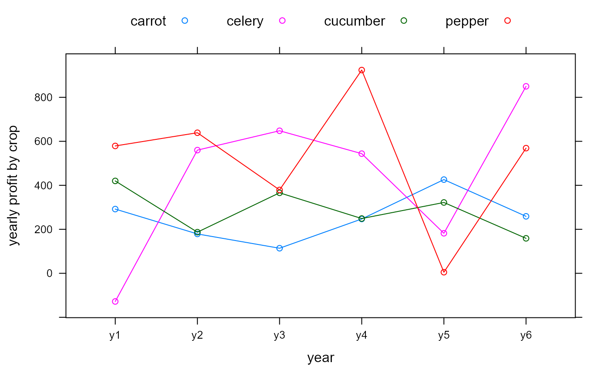
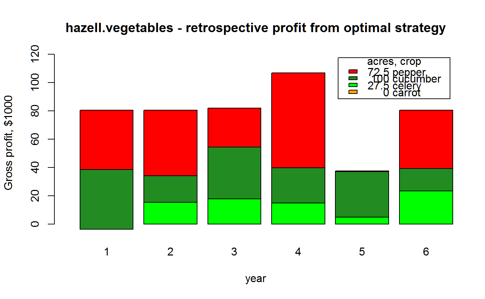

hazell.vegetables.RdGross profit for 4 vegetable crops in 6 years
data("hazell.vegetables")
A data frame with 6 observations on the following 5 variables.
yearyear factor, 6 levels
carrotCarrot profit, dollars/acre
celeryCelery profit, dollars/acre
cucumberCucumber profit, dollars/acre
pepperPepper profit, dollars/acre
The values in the table are gross profits (loss) in dollars per acre. The criteria in the example below are (1) total acres < 200, (2) total labor < 10000, (3) crop rotation.
The example shows how to use linear programming to maximize expected profit.
P.B.R. Hazell, (1971). A linear alternative to quadratic and semivariance programming for farm planning under uncertainty. Am. J. Agric. Econ., 53, 53-62. https://doi.org/10.2307/3180297
Carlos Romero, Tahir Rehman. (2003). Multiple Criteria Analysis for Agricultural Decisions. Elsevier.
# \dontrun{ library(agridat) data(hazell.vegetables) dat <- hazell.vegetables libs(lattice) xyplot(carrot+celery+cucumber+pepper ~ year,dat, ylab="yearly profit by crop", type='b', auto.key=list(columns=4), panel.hline=0)# optimal strategy for planting crops (calculated below) dat2 <- apply(dat[,-1], 1, function(x) x*c(0, 27.5, 100, 72.5))/1000 colnames(dat2) <- rownames(dat) barplot(dat2, legend.text=c(" 0 carrot", "27.5 celery", " 100 cucumber", "72.5 pepper"), xlim=c(0,7), ylim=c(-5,120), col=c('orange','green','forestgreen','red'), xlab="year", ylab="Gross profit, $1000", main="hazell.vegetables - retrospective profit from optimal strategy", args.legend=list(title="acres, crop"))#># colMeans(dat[ , -1]) # 252.8333 442.6667 283.8333 515.8333 # cvec = avg across-years profit per acre for each crop cvec <- c(253, 443, 284, 516) # Maximize c'x for Ax=b A <- rbind(c(1,1,1,1), c(25,36,27,87), c(-1,1,-1,1)) colnames(A) <- names(cvec) <- c("carrot","celery","cucumber","pepper") rownames(A) <- c('land','labor','rotation') # bvec criteria = (1) total acres < 200, (2) total labor < 10000, # (3) crop rotation. bvec <- c(200,10000,0) const.dir <- c("<=","<=","<=") m1 <- solveLP(cvec, bvec, A, maximum=TRUE, const.dir=const.dir, lpSolve=TRUE) # m1$solution # optimal number of acres for each crop # carrot celery cucumber pepper # 0.00000 27.45098 100.00000 72.54902 # Average income for this plan ## sum(cvec * m1$solution) ## [1] 77996.08 # Year-to-year income for this plan ## as.matrix(dat[,-1]) ## [,1] ## [1,] 80492.16 ## [2,] 80431.37 ## [3,] 81884.31 ## [4,] 106868.63 ## [5,] 37558.82 ## [6,] 80513.73 # optimum allocation that minimizes year-to-year income variability. # brute-force search # For generality, assume we have unequal probabilities for each year. probs <- c(.15, .20, .20, .15, .15, .15) # Randomly allocate crops to 200 acres, 100,000 times #set.seed(1) mat <- matrix(runif(4*100000), ncol=4) mat <- 200*sweep(mat, 1, rowSums(mat), "/") # each row is one strategy, showing profit for each of the six years # profit <- mat profit <- tcrossprod(mat, as.matrix(dat[,-1])) # Each row is profit, columns are years # calculate weighted variance using year probabilities wtvar <- apply(profit, 1, function(x) cov.wt(as.data.frame(x), wt=probs)$cov) # five best planting allocations that minimizes the weighted variance ix <- order(wtvar)[1:5] mat[ix,]#> [,1] [,2] [,3] [,4] #> [1,] 69.78990 27.78428 87.63774 14.78808 #> [2,] 72.46053 28.76455 82.99749 15.77743 #> [3,] 68.78445 28.07023 86.57654 16.56877 #> [4,] 73.12205 29.29729 82.24620 15.33445 #> [5,] 70.28423 29.73192 86.69204 13.29181## carrot celery cucumber pepper ## [,1] [,2] [,3] [,4] ## [1,] 71.26439 28.09259 85.04644 15.59657 ## [2,] 72.04428 27.53299 84.29760 16.12512 ## [3,] 72.16332 27.35147 84.16669 16.31853 ## [4,] 72.14622 29.24590 84.12452 14.48335 ## [5,] 68.95226 27.39246 88.61828 15.03700 # }